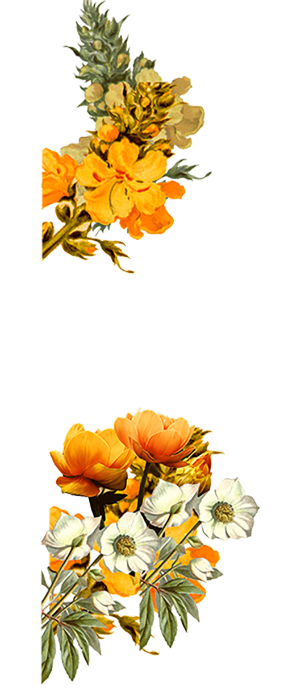
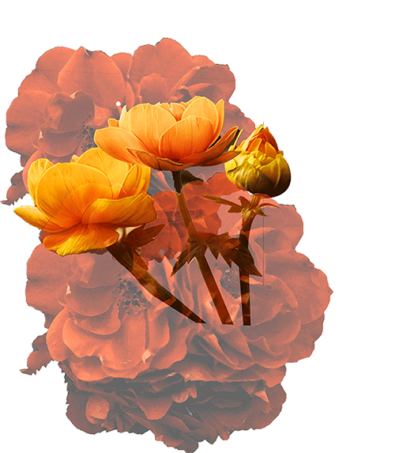
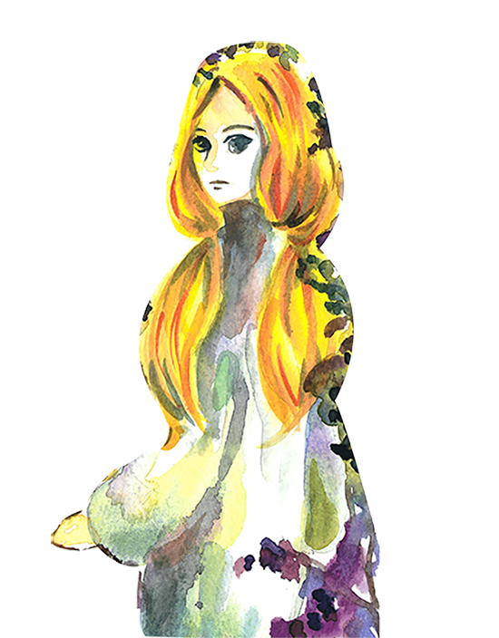
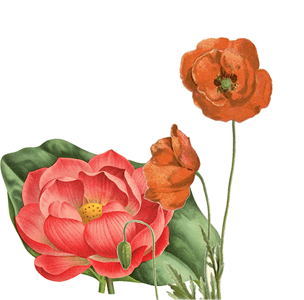
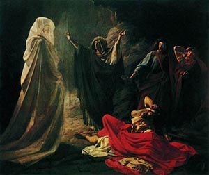
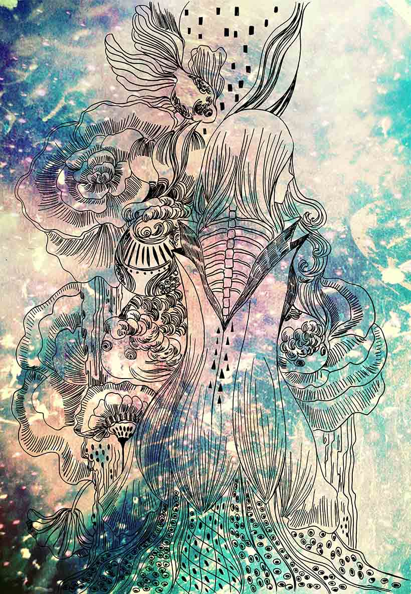
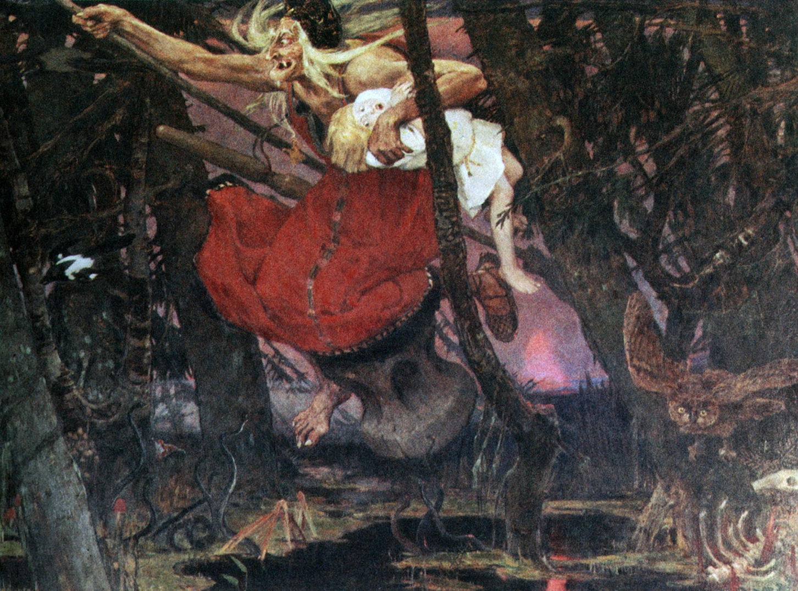
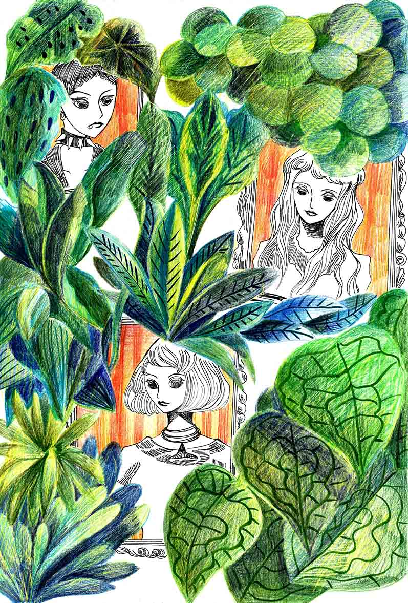
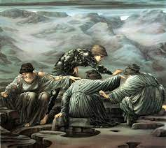
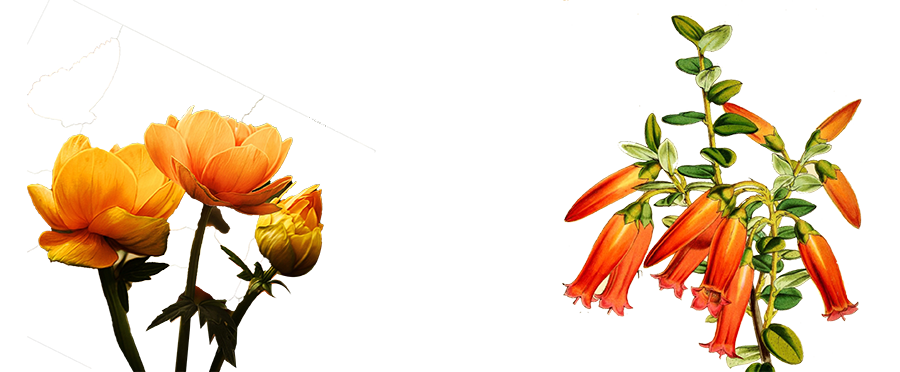

女巫，概念

The Witch of Endor
The Witch of Endor is known also as the biblical Medium of Endor. According to legend, she was a medium who apparently summoned the Prophet Samuel’s spirit. She is known from the Old Testament, but became a part of other traditions too.As the story goes, King Saul went to the Witch of Endor for answers about how to defeat the Philistines. The Witch then summoned the ghost of the prophet Samuel—who didn’t tell him how to defeat the Philistines—but prophesied that he would be defeated and join his three sons in the afterlife.
女巫，力量
妳把全身的血肉換成愛給了他。 到頭來卻明白，就算是一場空， 留下的只是入骨的記憶、悔恨、悲傷，從此妳融入淚水中，萬劫不復。

Medusa
女巫，文學

Baba Yaga
In Russian folklore there are many stories of Baba Yaga, the fearsome witch with iron teeth. She is also known as Baba Yaga Boney Legs, because, in spite of a ferocious appetite, she is as thin as a skeleton. In Russian that’s: ‘Baba Yaga Kostianaya Noga’. Her nose is so long that it rattles against the ceiling of her hut when she snores, stretched out in all directions upon her ancient brick oven.Not being a boringly-conventional witch, she does not wear a hat, and has never been seen on a broomstick. She travels perched in a large mortar with her knees almost touching her chin, and pushes herself across the forest floor with a pestle.
女巫，魔法
狂野女巫的叢林聚會叢林深處內尋找與解放。那是森林給予的溫柔。那是山間給予的狂風。那是自然給予的歸處。

Morgan Le Fay
女巫，女人

Graeae
The Graeae were three sisters of fate who shared one eye and one tooth in Greek mythology. They were born as old women and their names were Deino (dread), Enyo (horror) and Pemphredo (alarm).One might also compare the Graeae with the three spinners of Destiny, the Moirai who were also called the Fates in Greek mythology. The three Moirai determined the span of human life of every mortal from birth to death. They were so powerful that no god had the right or the means to alter their decisions.Although, the Fates were the personifications of destiny, no human could blame the fates, since there were times he was the only one responsible for his failures.
